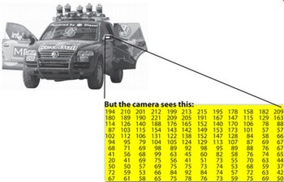

Tema 1- Introducción a OpenCV¶
En este tema veremos las funcionalidades básicas de OpenCV: cargar una imagen o un vídeo, mostrarlo por pantalla y guardar ficheros.
Carga y visualización de imágenes¶
Vamos a comprobar que la instalación se ha hecho de forma correcta compilando el siguiente programa de ejemplo.
1 2 3 4 5 6 7 8 9 10 11 12 13 14 15 16 17 18 19 20 21 22 23 24 25 26 27 | #include <opencv2/opencv.hpp> // Incluimos OpenCV #include <iostream> using namespace cv; using namespace std; int main( int argc, char* argv[] ) { if( argc != 2) { cout <<" Uso: display_image <imagen>" << endl; return -1; } Mat image = imread(argv[1]); // Leer fichero de imagen if (!image.data ) { // Comprobar lectura cout << "Could not open or find the image" << endl; return -1; } namedWindow( "Ventana", WINDOW_AUTOSIZE ); // Crear una ventana imshow( "Ventana", image ); // Mostrar la imagen en la ventana waitKey(0); // Esperar a pulsar una tecla en la ventana return 0; } |
Llamamos a este fichero lectura.cpp y desde un terminal ejecutamos:
1 | g++ lectura.cpp -o lectura `pkg-config opencv --cflags --libs` |
Si todo va bien debería crearse un fichero ejecutable llamado lectura. Descargamos esta imagen de ejemplo y ejecutamos el programa de la siguiente forma:
1 | ./lectura lena.jpg |
Como puede verse, se crea una ventana con la imagen que se cerrará cuando pulsamos una tecla.
Vamos a analizar este código en detalle. En la primera línea, el programa incluye OpenCV, y después se añade el espacio de nombres cv. Esto tenemos que hacerlo siempre que queramos usar la librería. En ocasiones es posible que necesitemos incluir algún fichero de cabecera adicional de OpenCV, pero en la mayoría de casos no es necesario.
Preparamos la función main para recibir parámetros, y comprobamos que el usuario ha introducido uno (si no es así, damos un mensaje de error y terminamos).
A continuación creamos una matriz (Mat) para guardar la imagen, que leemos con imread usando el nombre de fichero que se le pasa por parámetro. Cada vez que se intenta cargar una imagen es importante comprobar que se ha leido correctamente.
En este punto ya tenemos la imagen cargada en una matriz. Podríamos procesarla, pero de momento sólo vamos a mostrarla en una ventana. Para ello creamos primero una ventana con el nombre "Ventana" y tamaño variable usando la función namedWindow. En la siguiente línea llamamos a la función imshow para mostrar la imagen en la ventana.
En este ejemplo la llamada a
namedWindowpuede omitirse sin consecuencias. Siimshowrecibe como primer parámetro el nombre de una ventana que todavía no está creada, ésta se crea automáticamente con los parámetros por defecto.
Siempre que mostremos una imagen en pantalla debemos llamar a la función waitKey(0) para que la ventana se cierre cuando se pulse una tecla. Si no añadimos esta línea, la ventana no llegará a aparecer (mejor dicho, aparecerá y se cerrará de inmediato).
Carga de imágenes¶
La siguiente instrucción carga en una matriz la imagen cuyo nombre recibe por parámetro.
1 | Mat image = imread(argv[1]); |
Como sabes, las imágenes digitales se representan con matrices.

Los formatos principales de imágenes soportadas por OpenCV son:
- Windows bitmaps (
bmp,dib) - Portable image formats (
pbm,pgm,ppm) - Sun rasters (
sr,ras)
También soporta otros formatos a través de librerías auxiliares:
- JPEG (
jpeg,jpg,jpe) - JPEG 2000 (
jp2) - Portable Network Graphics (
png) - TIFF (
tiff,tif) - WebP (
webp).
La función imread tiene un parámetro opcional. Cuando carguemos una imagen en escala de grises debemos usar IMREAD_GRAYSCALE:
1 2 | // Cargamos la imagen (tanto si es en color como si no) en escala de grises Mat image = imread("lena.jpg", IMREAD_GRAYSCALE); |
Esto es porque la opción por defecto es IMREAD_COLOR, y por tanto se cargará la imagen con 3 canales independientemente de que esté o no en escala de grises. Podemos ver todos los modos de apertura con imread en este enlace.
La clase Mat¶
La clase Mat contiene los valores numéricos de la matriz que almacena, y además una cabecera (con el tipo de datos que contiene, las dimensiones de la matriz, etc). Esta clase de C++ tiene su constructor y destructor, por lo que no hace falta gestionar manualmente su memoria. La clase Mat sustituye al registro de C llamado IplImage que se usaba en las primeras versiones de OpenCV, y que se desaconseja usar actualmente ya que necesita liberar a mano la memoria.
En OpenCV podemos crear una matriz arbitraria, contenga o no los datos de una imagen:
1 2 3 | // Para crear una matriz: Mat M(filas, columnas, tipo, valores iniciales) Mat m(10, 10, CV_8UC3, Scalar(0,0,255)); cout << "m = " << endl << " " << m << endl << endl; |
Como puede verse, los dos primeros parámetros son las filas y columnas. El tipo de dato en este ejemplo es CV_8UC3. Significa que tenemos datos de 8 bits (entre 0 y 255) de tipo unsigned char, y con 3 canales. Por tanto, se trata de una matriz preparada para almacenar una imagen en color (por ejemplo, RGB).
Es importante resaltar que cuando OpenCV carga una imagen RGB, internamente la almacena como BGR. Es decir, el canal 0 es el azul, el canal 1 el verde, y el canal 2 el rojo. Por tanto, en el ejemplo anterior hemos creado una imagen de 10x10 píxeles y color rojo.
Los formatos más comunes son CV_8UC3 para imágenes en color, y CV_8UC1 para escala de grises, pero hay más.
El rango de valores que representa la matriz puede ser:
CV_8U: Unsigned char (0~255)CV_8S: Signed char (-128~127)CV_16U: Unsigned short (0~65535)CV_16S: Signed short (-32768~32767)CV_32S: Signed int (-2147483648~2147483647)CV_32F: Signed float (-1.18*10-38~3.40*10-38)CV_64F: Signed double (mucho!)
El número de canales puede ser C1, C2, C3 y C4 con cualquier tipo de dato.
En la inicialización de esta matriz de ejemplo hemos usado el constructor Scalar. Esta instrucción declara un vector de tres elementos con los valores indicados. Scalar permite representar vectores de 4 elementos como máximo. En el contexto de la declaración de la matriz, inicializamos a cero todos los valores de los canales 0 y 1, y a 255 los del canal 2 (rojo). Si queremos asignar valores a una matriz que esté ya creada, podemos usar por ejemplo:
1 2 | m.setTo(50); // si la imagen es de 1 canal m.setTo(Scalar(10, 4, 50)); // si la imagen es de 3 canales (por ejemplo, BGR) |
Si por ejemplo quisiéramos inicializar todos los valores de la matriz a cero, a uno, o a valores arbitrarios también podríamos escribir lo siguiente:
1 2 3 4 5 | Mat m1 = Mat::zeros(3,3, CV_8UC1); // Inicialización con ceros Mat m2 = Mat::ones(3,3, CV_8UC1); // Inicialización con unos Mat m3 = (Mat_<double>(3,3) << 0, -1, 0, -1, 5, -1, 0, -1, 0); // Inicialización con valores dados |
Para copiar los datos de una matriz en otra hay que usar el constructor de copia o el método clone:
1 2 | Mat m1(m2); // Constructor de copia (sólo en declaración) m1 = m2.clone(); // Alternativa usando clone (cuando la primera matriz está ya declarada) |
Ojo, el operador de asignación (
=) no hace una copia de la matriz, sino que crea un puntero que apunta a la segunda matriz e incrementa el contador de referencias. Como alternativa acloneexiste también el métodocopyTo, pero sólo puede usarse si la cabecera de la matriz destino (tipo, resolución, etc) es idéntica a la matriz origen.
Para modificar una matriz ya creada:
1 2 3 | Mat m(7, 7, CV_32FC2, Scalar(1,3)); // la cambiamos por una matriz uchar de 3 canales y tamaño 100x60 m.create(100, 60, CV_8UC3); |
También podemos crear una matriz que contenga una región de interés (una zona rectangular dada) de otra imagen:
1 | Mat roi(m, Rect(50, 50, 150, 150) ); |
Para acceder a valores individuales de una matriz, podemos hacer uso de los siguientes valores:
channels(): Devuelve el número de canales de la matrizcols: Devuelve el número de columnas de una matrizrows: Devuelve el número de filas de una matriz
Si queremos tener información sobre la estructura de la matriz, podemos usar las siguientes instrucciones:
1 2 3 | unsigned channels = image.channels(); unsigned rows = image.rows; unsigned columns = image.cols; |
La clase Mat también tiene métodos para invertir matrices, transponerlas, etc.
Otros tipos básicos¶
Además de la clase Mat, OpenCV define otros tipos básicos. Todos ellos tienen sobrecargado el operador salida, por lo que podemos mostrar su valor usando << como con cualquier otra variable.
- VecAB. Se pueden declarar vectores en el formato
VecAB, donde A (número de dimensiones) es un valor entre 2 y 5, y B es el tipo de dato: b (uchar), s (short), i (int), f (float) o d (double). Por ejemplo:
1 2 | Vec3d v(1.1, 2.2, 3.3); Vec3b bgr(1, 2, 3); |
Para vectores de más dimensiones debemos usar la clase vector de C++.
- Scalar. Nos permite declarar un vector de una dimensión que contiene como máximo 4 valores escalares (reales). Por ejemplo:
1 2 | Scalar s(1, 3); cout << s[1] << endl; // Imprime 3 |
Hay funciones en OpenCV que necesitan parámetros escalares, como el constructor de Mat que hemos visto anteriormente.
- PointAB. Se suele usar para representar, por ejemplo, puntos de contorno (la silueta de un objeto). La sintaxis es
PointAB, donde A es la dimensión (2 o 3), y B es el tipo de dato: i (int), f (float), o d (double). Por ejemplo:
1 2 3 4 | Point3d p; p.x = 0; p.y = 0; p.z = 0; |
- Size. Especifica un tamaño (anchura por altura). Por ejemplo:
1 2 3 | Size s; s.width = 30; s.height = 40; |
- Rect. La clase rectángulo es parecida a
Sizepero indicando unas coordenadas de origen. Ejemplo:
1 2 3 | Rect r; r.x = r.y = 0; r.width = r.height = 100; |
Acceso a los píxeles¶
Para recorrer los valores de una matriz que tiene un canal y es de tipo unsigned char, podemos usar el método at:
1 2 3 4 5 | if (m.channels() == 1) { for( int i = 0; i < m.rows; i++) for( int j = 0; j < m.cols; j++ ) uchar value = m.at<uchar>(i,j); } |
En el caso de que tengamos una matriz de más canales (por ejemplo, una imagen de color):
1 2 3 4 5 6 7 8 9 10 11 | if (m.channels() == 3) { uchar r, g, b; for (int i = 0; i < m.rows; i++) { for (int j = 0; j < m.cols; j++) { Vec3b pixel = m.at<Vec3b>(i,j); b = pixel[0]; g = pixel[1]; r = pixel[2]; } } } |
En OpenCV hay muchas formas de acceder a los píxeles individuales y algunas de ellas son más eficientes que at, aunque también hacen el código algo más lioso. El problema de at es que necesita calcular la posición exacta de memoria de la fila y columna de un píxel. Una alternativa muy eficiente y frecuentemente usada es esta:
1 2 3 4 5 6 7 8 9 10 11 | if (m.channels == 3) { uchar r, g, b; for (int i = 0; i < m.rows; i++) { Vec3b* pixelRow = m.ptr<Vec3b>(i); for (int j = 0; j < m.cols; j++) { b = pixelRow[j][0]; g = pixelRow[j][1]; r = pixelRow[j][2]; } } } |
También podemos usar iteradores (MatIterator) para movernos por todos los píxeles, pero en esta asignatura se desaconseja (es limpio, pero más ineficiente que at).
Guardar imágenes¶
Para guardar una imagen en disco se usa la función imwrite. Ejemplo:
1 | imwrite("output.jpg", m); |
Esta función determina el formato del fichero de salida a partir de la extensión proporcionada en el nombre del fichero (en este caso, JPG). Existe un tercer parámetro opcional en el que podemos indicar un vector con opciones de escritura. Por ejemplo:
1 2 3 4 5 | vector<int> compression_params; compression_params.push_back(CV_IMWRITE_PNG_COMPRESSION); compression_params.push_back(9); // Compresion de nivel 9 imwrite("alpha.png", m, compression_params); |
Podemos escribir directamente con imwrite, pero hay casos en los que esta operación puede fallar (por ejemplo, cuando intentamos acceder a un directorio sin permisos). Si esto ocurre, la función devolverá false. Si queremos saber si se ha escrito la imagen, tenemos que comprobarlo. Siempre que escribamos una imagen, es recomendable comprobar que se ha podido hacer la operación:
1 2 3 4 | bool ok = imwrite("alpha.png", m, compression_params); if (ok) { // Se ha podido escribir } |
Ejercicio¶
Haz un programa llamado grayscale.cpp que lea una imagen que está en color y la escriba en escala de grises. El programa recibirá como argumento el nombre del fichero de la imagen en color y el del fichero en el que vamos a almacenar la misma imagen pero en escala de grises. Sintaxis:
1 | grayscale <imagen_entrada_color> <imagen_salida_gris> |
Si la imagen no puede guardarse, el programa debe imprimir por pantalla el mensaje Error de escritura.
Persistencia¶
Además de las funciones específicas para leer y escribir imágenes y vídeo, en OpenCV hay otra forma genérica de guardar o cargar datos. Esto se conoce como persistencia de datos. Los valores de los objetos y variables en el programa pueden guardarse (serializados) en disco, lo cual es útil para almacenar resultados y cargar datos de configuración.
Estos datos suelen guardarse en un fichero xml mediante un diccionario (en algunos lenguajes de programación como C++, a los diccionarios se les llama también mapas) usando pares clave/valor. Por ejemplo, si quisiéramos guardar una variable que contiene el número de objetos detectados en una imagen:
1 2 3 | FileStorage fs("config.xml", FileStorage::WRITE); // Abrimos el fichero para escritura fs << "numero_objetos" << num_objetos; // Guardamos el numero de objetos fs.release(); // Cerramos el fichero |
Asumiendo que nuestra variable contiene el valor 10, se almacenará en disco el siguiente fichero config.xml:
1 2 3 4 | <?xml version="1.0"?> <opencv_storage> <numero_objetos>10</numero_objetos> </opencv_storage> |
Si posteriormente queremos cargar esta información del fichero, podemos usar el siguiente código:
1 2 3 | FileStorage fs("config.xml", FileStorage::READ); fs["numero_objetos"] >> num_objetos; fs.release(); |
Elementos visuales¶
Como hemos visto al principio, podemos crear una ventana para mostrar una imagen mediante namedWindow. El segundo parámetro que recibe la función puede ser:
WINDOW_NORMAL: El usuario puede cambiar el tamaño de la ventana una vez se muestra por pantalla.WINDOW_AUTOSIZE: El tamaño de la ventana se ajusta al tamaño de la imagen y el usuario no puede redimensionarla. Es la opción por defecto.WINDOW_OPENGL: Se crea la ventana con soporte para OpenGL (no es necesario en esta asignatura).
Dentro de la ventana de OpenCV en la que mostramos la imagen podemos añadir trackbars, botones, capturar la posición del ratón, etc. En este enlace podemos ver las funciones y constantes relacionadas con la gestión del entorno visual estándar.
Para capturar la posición del ratón podemos usar el método setMouseCallback, que recibe tres parámetros:
- El nombre de la ventana en la que se captura el ratón
- El nombre de la función que se invocará cuando se produzca cualquier evento del ratón (pasar por encima, clickar con el botón, etc.)
- Un puntero (opcional) a cualquier objeto que queramos pasarle a nuestra función.
La función callback que hemos creado recibe cuatro parámetros: El código del evento, los valores x e y, unas opciones (flags) y el puntero al elemento pasado a la función.
1 2 3 4 5 6 7 8 9 10 11 12 13 14 15 16 17 18 19 20 21 22 23 24 25 26 27 28 29 30 31 32 33 34 35 36 | #include <opencv2/opencv.hpp> #include <iostream> using namespace cv; using namespace std; void handleMouseEvent(int event, int x, int y, int flags, void* param) { Mat* m = (Mat*)param; if (event == CV_EVENT_LBUTTONDOWN) { Vec3b d = m->at<Vec3b>(y,x); cout << x << ", " << y << ": " << d << endl; } } int main(int argc, char* argv[]) { Mat m = imread("lena.jpg"); if ( m.empty() ) { cout << "Error loading the image" << endl; return -1; } namedWindow("Ventana", 1); // asignar la función callback para cualquier evento de raton setMouseCallback("Ventana", handleMouseEvent, &m); imshow("Ventana", m); waitKey(0); return 0; } |
Podemos crear un trackbar (también llamado slider) para ajustar algún valor en la ventana de forma interactiva usando la función createTrackbar. Al igual que ocurre con la función que gestiona el ratón, puede recibir como último parámetro un puntero a un objeto (en el siguiente ejemplo, this). Este puntero lo recibirá la función que se le pasa a createTrackbar como penúltimo parámetro (en el siguiente ejemplo, onChange):
1 2 3 4 5 6 7 8 9 10 11 12 13 14 15 16 17 18 19 20 21 22 23 24 25 26 27 28 29 30 31 32 33 34 35 36 37 38 39 40 41 42 43 44 45 46 47 48 49 50 51 52 53 54 55 56 57 58 59 60 | #include <opencv2/opencv.hpp> #include <iostream> using namespace cv; using namespace std; class LinearBlend { private: static const int MAXALPHA = 100; Mat *m1, *m2; // Punteros por eficiencia public: LinearBlend(Mat &img1, Mat &img2, int initialSliderValue) { // Inicializar valores m1 = &img1; m2 = &img2; // Crear slider. Importante: el ultimo parametro es this. Se recibe desde onChange. createTrackbar("Blend slider", "Window", &initialSliderValue, MAXALPHA, onChange, this); // Llamar a la funcion para mostrar algo antes de llegar a modificar el slider process(initialSliderValue); } static void onChange(int v, void *ptr) { // Conversion de tipo y llamada a la funcion que procesa LinearBlend *lb = (LinearBlend*)ptr; lb->process(v); } void process(int v) { // Funcion que procesa el resultado double alpha = (double)v/MAXALPHA; double beta = 1 - alpha; // Guardamos en dst la imagen procesada Mat dst = *m1 * alpha + *m2 * beta; // Mostramos la imagen imshow("Window",dst); } }; int main() { // Importante: Las imagenes deben ser del mismo tipo y dimensiones Mat img1 = imread("LinuxLogo.jpg"); Mat img2 = imread("WindowsLogo.jpg"); if (!img1.data || ! img2.data || img1.channels()!=img2.channels() || img1.cols!=img2.cols || img1.rows!=img2.rows) { cout << "Error cargando imagenes" << endl; return -1; } namedWindow("Window", CV_WINDOW_AUTOSIZE); LinearBlend(img1, img2, 20); waitKey(0); return 0; } |
Necesitarás estas dos imágenes para probar el código:
Importante: la función que gestiona los cambios (en este caso,
onChange) sólo puede recibir un puntero a una variable. Por tanto si, tal como ocurre en este ejemplo, es necesario pasar varias variables (variosMat, etc.), lo limpio es hacer una clase y pasar un puntero a un objeto que sea una instancia de la misma como hemos hecho en este caso. Si buscáis por internet ejemplos de elementos visuales en OpenCV veréis que para evitar esto mucha gente usa variables globales. Se trata de una opción más rápida a la hora de implementar, pero no es limpia en absoluto.
Además de los eventos de ratón y los sliders, podemos añadir botones con la función createButton (sólo si hemos compilado OpenCV con la librería QT), y también existen opciones para dibujar sobre la ventana.
Como alternativa a usar los elementos visuales nativos de la interfaz de OpenCV, puedes usar otras librerías más potentes como imgui o QT, aunque no nos hará falta para esta asignatura.
Vídeo¶
OpenCV permite cargar ficheros de vídeo o usar una webcam para realizar procesamiento en tiempo real. Veamos un ejemplo de detección de bordes usando una webcam (dará un error al ejecutarlo porque el laboratorio no está equipado con cámaras, pero si tienes un portátil puedes probarlo):
1 2 3 4 5 6 7 8 9 10 11 12 13 14 15 16 17 18 19 20 21 22 23 24 25 26 27 28 29 30 31 32 33 34 35 36 37 38 39 | #include <opencv2/opencv.hpp> #include <iostream> using namespace cv; using namespace std; int main() { Mat edges, frame; // Abrimos la camara por defecto y comprobamos que se ha podido VideoCapture cap(0); if(!cap.isOpened()) { return -1; } // Creamos la ventana namedWindow("edges"); // Bucle infinito (hasta pulsar una tecla) while (true) { // Cogemos un nuevo frame de la camara cap >> frame; // Detectamos los bordes con Canny (en otro tema veremos en detalle este algoritmo) cvtColor(frame, edges, COLOR_BGR2GRAY); GaussianBlur(edges, edges, Size(7,7), 1.5, 1.5); Canny(edges, edges, 0, 30, 3); // Mostramos la salida en la ventana imshow("edges", edges); // La función waitKey(n) se usa para introducir un retardo de n milisegundos al renderizar imagenes en un bucle. // Cuando se usa como waitKey(0) devuelve la tecla pulsada por el usuario en la ventana activa. if(waitKey(30) >= 0) break; } return 0; } |
Como puede verse, el código es bastante sencillo. Simplemente tenemos que inicializar una variable de captura de vídeo, y con el operador de entrada >> podemos obtener los frames para procesarlos.
En caso de que queramos cargar un fichero de vídeo (por ejemplo, este ), sólo hay que cambiar una línea:
1 | VideoCapture capture("Megamind.avi"); |
Para guardar un fichero de vídeo hay que llamar a la función VideoWriter especificando el formato, fps (frames por segundo) y las dimensiones. Por ejemplo:
1 | VideoWriter video("out.avi", CV_FOURCC('M','J','P','G'), 20, Size(frame_width,frame_height)); // AVI, 20fps widthxheight |
Estos son algunos de los formatos aceptados, aunque existen muchos más:
1 2 3 4 5 | CV_FOURCC('M','J','P','G') // AVI, recomendado en la asignatura CV_FOURCC('D','I', 'V', '3') // DivX MPEG-4 codec CV_FOURCC('M','P','E','G') // MPEG-1 codec CV_FOURCC('M','P', 'G', '4') // MPEG-4 codec CV_FOURCC('D','I', 'V', 'X') // DivX codec |
Para escribir un frame de vídeo podemos usar el operador salida:
1 | video << frame; |
Puedes encontrar información detallada sobre procesamiento de vídeo en OpenCV en este enlace.